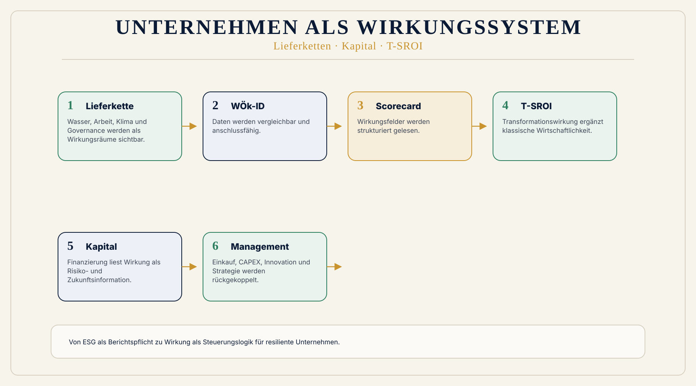
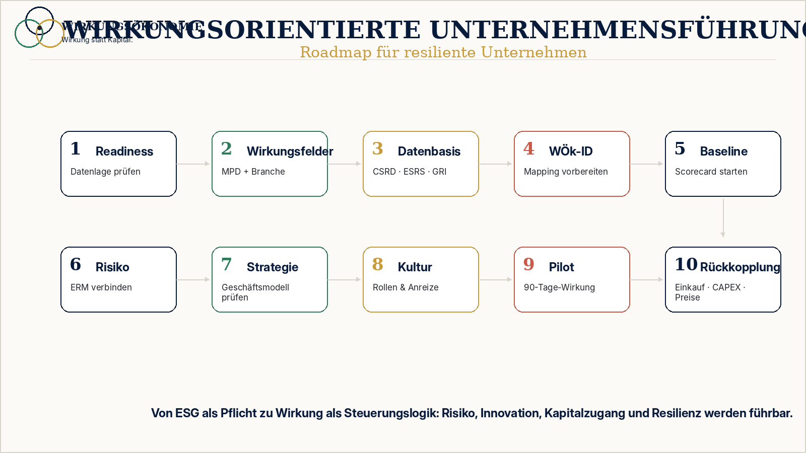

Was läuft heute falsch?
Nachhaltigkeit wird oft als Berichtspflicht, Label oder Kostenstelle behandelt, obwohl die eigentlichen Risiken in Lieferketten, Produkten, Energie, Kapital und Geschäftsmodell entstehen.
 Wirkungsökonomie
Wirkungsökonomie
Für wen · Warum zuerst
Vom Nachhaltigkeitsbericht zur Steuerungslogik für Resilienz, Kapitalfähigkeit und bessere Entscheidungen.
Unternehmen stehen vor härteren Lieferketten-, Energie-, Kapital- und Regulierungsrisiken. Reines Reporting reicht nicht mehr, wenn Wirkung über Resilienz, Finanzierung und Zukunftsfähigkeit entscheidet.
Warum diese Seite wichtig ist
Nachhaltigkeit wird oft als Berichtspflicht, Label oder Kostenstelle behandelt, obwohl die eigentlichen Risiken in Lieferketten, Produkten, Energie, Kapital und Geschäftsmodell entstehen.
ESG-Berichte, CSRD-Tabellen und einzelne CSR-Projekte beschreiben vieles, verändern aber noch nicht automatisch Einkauf, Innovation, Investitionen oder Strategie.
Unternehmen brauchen die WÖk, weil Wirkung zur Führungsinformation wird: Sie zeigt, wo ein Geschäftsmodell Zukunft schützt oder Risiken versteckt.
Von Nachhaltigkeit als Pflicht zu Wirkung als Unternehmenssteuerung.
Was heute falsch läuft
Berichte schaffen Transparenz, aber ohne Rückkopplung bleiben Entscheidungen oft wirkungsblind.
Günstige Beschaffung kann Wasser-, Arbeits-, Klima- oder Regulierungsrisiken verdecken.
Finanzierung wird schwieriger, wenn Risiken nicht belastbar, vergleichbar und steuerbar sind.
Unklare Nachhaltigkeitsversprechen beschädigen Vertrauen, Marke und Managementqualität.
Warum WÖk besser ist
Die WÖk ist kein moralischer Zusatz. Sie macht sichtbar, welche Wirkung ein Unternehmen erzeugt und wie diese Wirkung auf Risiken, Kapital, Innovation, Beschaffung und Strategie zurückwirkt.

Konkreter Nutzen
Risiken in Lieferketten, Energie, Rohstoffen und Regulierung werden früher sichtbar.
Wirkungsdaten stärken die Anschlussfähigkeit an CSRD, ESRS, Taxonomie, DPP und Finanzierungsgespräche.
Management sieht nicht nur Kosten, sondern verdeckte Folgekosten, Chancen und Transformationsrisiken.
Produktentwicklung richtet sich stärker an Lösungen mit positiver Netto-Wirkung aus.
Wirkung ersetzt pauschale Nachhaltigkeitsbehauptungen durch prüfbare Daten und Wirkungspfade.
Sinn, Verantwortung und Zukunftsfähigkeit werden führbar statt nur kommunizierbar.
Vorher / Nachher
Heute
Bericht, Pflicht, Risiko, Kostenstelle.
Wirkungsökonomie
Steuerungsdaten, Strategie, Resilienz, Innovation.
Heute
Preis und Verfügbarkeit dominieren.
Wirkungsökonomie
Wasserstress, Arbeit, Klima und Regulierung werden als Risiko sichtbar.
Heute
Gewinn steht isoliert im Zentrum.
Wirkungsökonomie
Gewinn bleibt wichtig, wird aber als Ergebnis tragfähiger Wirkung gelesen.
Wirkungspfad
Der Wirkungspfad kommt erst nach dem Warum: Er zeigt, wie Problem, Daten, Bewertung und Rückkopplung praktisch verbunden werden.
Konkretes Beispiel
Ein scheinbar günstiger Lieferant bringt Wasserstress, Arbeitsrisiken und künftige Regulierungsrisiken in die Wertschöpfung. In der alten Logik ist er billig. In der WÖk-Logik wird sichtbar: Er ist ein verdecktes Risiko.
Was nicht passiert
Gewinn bleibt möglich und notwendig; er wird nicht von Wirkung getrennt.
Unternehmerische Freiheit, Eigentum, Wettbewerb und Innovation bleiben erhalten.
Wirkung gehört in Strategie, Risiko, Einkauf, Produkt, Kapital und Governance.
Die WÖk betrifft das Kerngeschäft, nicht nur Kommunikation oder Begleitmaßnahmen.
Erste Schritte
Welche Daten liegen vor und wo entsteht Blindflug?
Welche Themen sind wirklich entscheidungsrelevant?
Eine Lieferkette, ein Produkt oder eine Investition wirkungslogisch prüfen.

Vertiefung
Der erste Schritt ist kein perfekter Umbau, sondern eine prüfbare Wirkungsfrage.
Evidenz / Stand